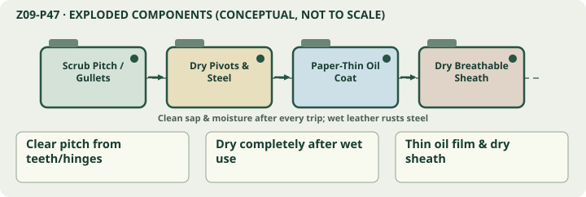

Z09-P47 · Tools and construction · New manuscript
Clean pitch, moisture and rust from saw teeth, hinges and blades
Keep folding pivots, saw gullets and carbon-steel blades moving freely and free of corrosive pitting.
When it applies · Post-trip and routine maintenance of folding saws, knives, axes, shears and multi-tools.
Equipment · Clean rag, mild soap/water or resin-safe solvent, toothbrush, light food-safe/tool oil and dry storage sheath.

Actions
- Scrub sticky conifer pitch out of saw gullets and knife hinges gently with a brush and safe cleaner, keeping fingers well away from sharp saw tooth points—gummed teeth bind and snap blades.[K04, K03, ED]
- Dry carbon-steel blades and multi-tool pivots thoroughly after rain, snow or damp use and wipe a paper-thin coat of clean protective oil (food-safe oil on food knives) to stop rust pitting.[K04, K01, ED]
- Store leather-sheathed knives and axes clean and dry; trapped moisture inside damp leather corrodes carbon steel overnight.[K04, ED]
Failure recognition · Stowing a sap-crusted wet folding saw in a sealed plastic bag for six months, discovering rusted seized pivot pins and bound teeth on the next trip.[K04, K03]
Verify · Confirm clean tooth gullets, smooth dry pivot action, lightly oiled corrosion-free steel and dry sheath storage.[K04, K01, ED]
Stop or change course · Retire rusted-through hinges, bent saw plates or pitted corroded locks that will not open or latch smoothly after cleaning.[K04, K02]
Evidence and editorial notes
- K01 · OSHA · Hand and Power Tools Safety and Health Topics (current web edition)
- Section: Hand Tools > General Safety Rules · Conditions: Use of knives, saws, axes, hammers and hand tools
Support: Keep hand tools in good condition, use the right tool for the job, examine each tool for damage before use, operate according to instructions and wear appropriate personal protective equipment.
Limitations: General occupational rules do not replace task-specific forestry or field-tool training. · Conflicting evidence: None; baseline tool safety framework.
Editorial note: Anchors tool selection, pre-use inspection and operating boundary cards in Z09. · Specialist reviewer: Tool safety and occupational safety
Primary source · checked 2026-11-24 - K02 · OSHA · Hand and Power Tools (OSHA 3080) (agency PDF)
- Section: Hand Tools > Knives, Chisels, Impact and Wrenches · Conditions: Manual cutting, striking and prying operations
Support: Direct cutting blades away from the body and bystanders, never use cracked wooden handles or mushroomed striking heads, and do not substitute wrenches or blades as pry bars.
Limitations: Does not specify material tensile ratings for improvised handles. · Conflicting evidence: None; directly informs safe cutting and impact-tool failure cards.
Editorial note: Prevents blade slip, splintered-handle and spalling-metal injuries. · Specialist reviewer: Tool safety and wilderness medicine
Primary source · checked 2026-11-24
Current assessment · A04-K02 (2026-11-25) · Open: support partial or missing (A04): Supports misuse and defective equipment limits in occupational work. Exact cutting lane and equipment guidance varies by tool kept under specialist review. Limits: Specialist review PENDING (Tool safety and wilderness medicine); publication HOLD. All release decisions pending. - K03 · USDA Forest Service · Handtools for Trail Work (0523-2810-MTDC) (agency handbook)
- Section: Tool Selection, Inspection and Safe Transport · Conditions: Trail and campsite hand tools (axes, saws, shovels, pulaskis, wedges)
Support: Inspect handles for splits, loose heads and secure wedges before every use; sheath sharp edges during carry and maintain a clear work circle around swinging tools.
Limitations: Forestry guidelines apply to maintained commercial tools; improvised stone or salvaged blades carry higher failure risk. · Conflicting evidence: None; aligns with OSHA-3080.
Editorial note: Grounds woodworking, swinging-tool clearance, carrying and maintenance cards. · Specialist reviewer: Forestry tool safety and trail maintenance
Primary source · checked 2026-11-24 - K04 · USDA Forest Service · Handtools for Trail Work (0523-2810-MTDC) (agency handbook)
- Section: Sharpening, Filing and Handle Maintenance · Conditions: Maintaining cutting edges and wood tool handles in field or shop
Support: Secure the tool firmly before filing or honing, keep fingers behind file guards, preserve factory bevel geometry without overheating steel and replace loose or cracked handles rather than taping them.
Limitations: Field touch-up honing does not correct chipped, cracked or heat-annealed steel blades. · Conflicting evidence: None; separates routine edge maintenance from unsafe handle patching.
Editorial note: Guides sharpening, rust prevention and handle-failure retirement cards. · Specialist reviewer: Tool maintenance and forestry safety
Primary source · checked 2026-11-24
Source lineage · USFS handtool maintenance and Ready.gov kit; new manuscript · Classification · New manuscript.